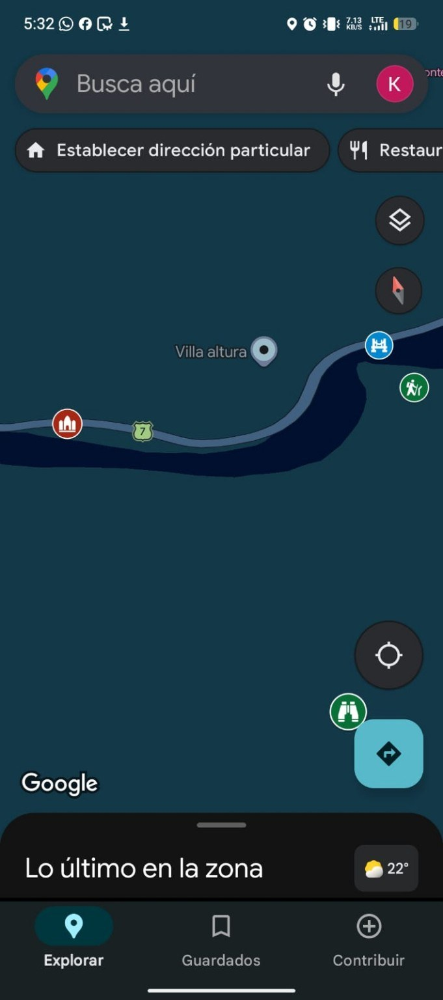
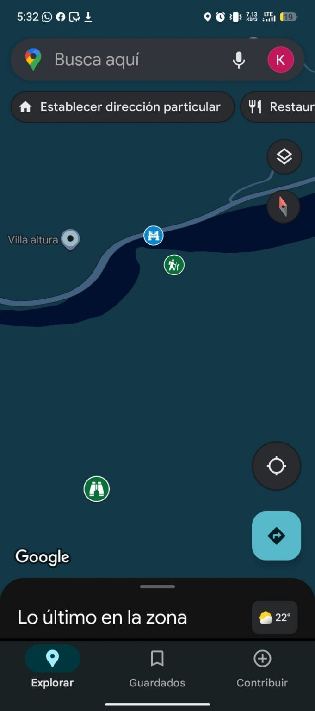
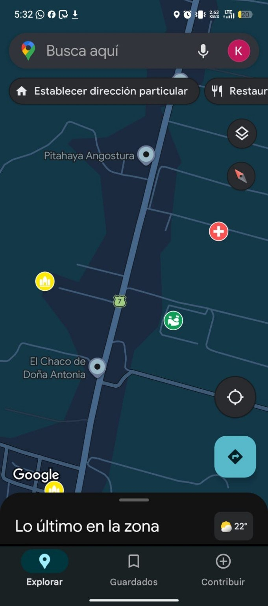
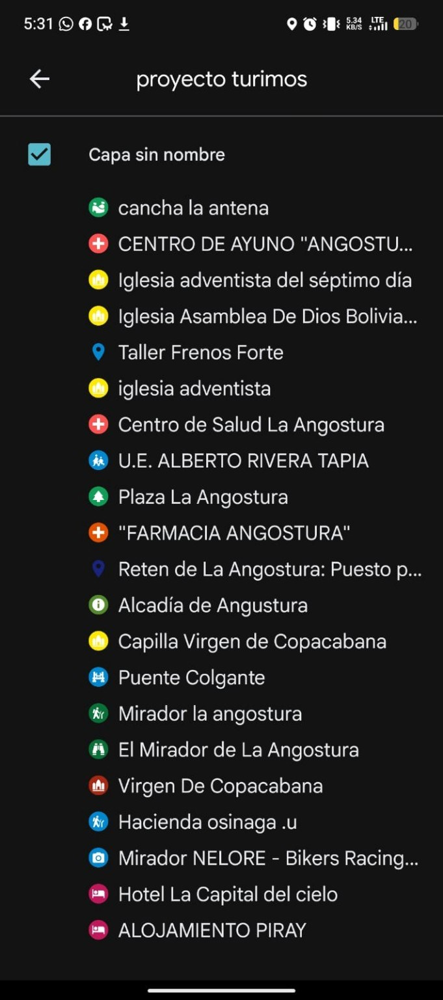
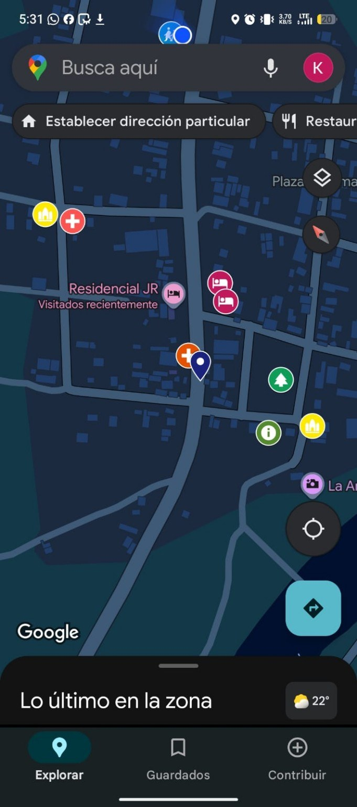
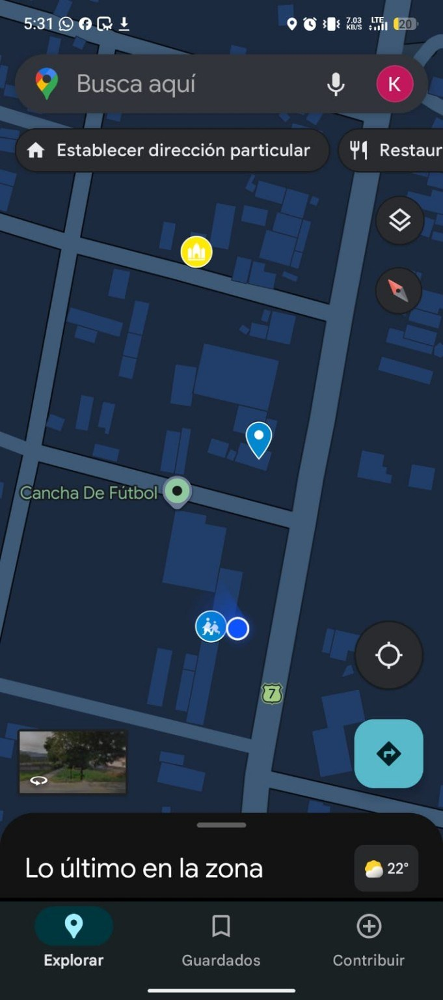

Alojamientos
Hotel La Capital del Cielo, Alojamiento Piray, Residencial JR y otros hospedajes cercanos.
La Angostura · Santa Cruz · Bolivia
Un sitio web sencillo, moderno y fácil de usar para ubicar atractivos naturales, servicios locales, alojamientos, restaurantes y puntos importantes de la comunidad.
Objetivo del proyecto
La comunidad de La Angostura cuenta con atractivos como el río Piraí, el Puente Colgante, la plaza, miradores y servicios que han ido creciendo. La guía digital ayuda a que visitantes y pobladores encuentren información clara, organizada y actualizada desde el celular.
Explora
Filtra por tipo de lugar para ubicar rápidamente sitios turísticos, servicios, alojamientos y espacios comunitarios.
Ruta sugerida
Acceso rápido
Coloca este QR en puntos estratégicos como la plaza, tranca o lugares de mayor visita para que las personas abran el mapa desde su celular.
Comunidad
Hotel La Capital del Cielo, Alojamiento Piray, Residencial JR y otros hospedajes cercanos.
Restaurantes, venta de comida, tiendas, talleres y emprendimientos locales.
Centro de Salud La Angostura, farmacia y otros puntos útiles para visitantes.
Mapa interactivo, referencias por Ruta 7 y códigos QR para ubicarse mejor.
Google My Maps
El mapa reúne atractivos, servicios, alojamientos, iglesias, centros de apoyo y puntos de referencia de La Angostura.
Croquis digital
Capturas del recorrido y del listado de puntos cargados en el mapa turístico.






Datos del proyecto
Colegio: U.E. Alberto Rivera Tapia
Director: Lic. Elar Ubaldo Terrazas
Docente de carrera: Lic. Sandra J. Viscarra Alarcón
Docente tutora: Lic. Norma Rosales Aguado
Integrantes: Kevin Jamphier Morales Flores y Fabia Paola Bailaba Martínez
Impacto social
La guía turística busca mejorar el acceso a la información, promover los atractivos naturales, fortalecer la participación comunitaria y generar mayor movimiento económico para pequeños negocios, alojamientos y servicios locales.